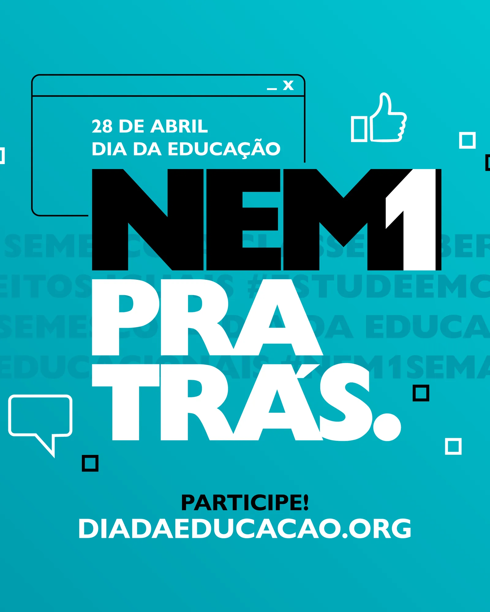
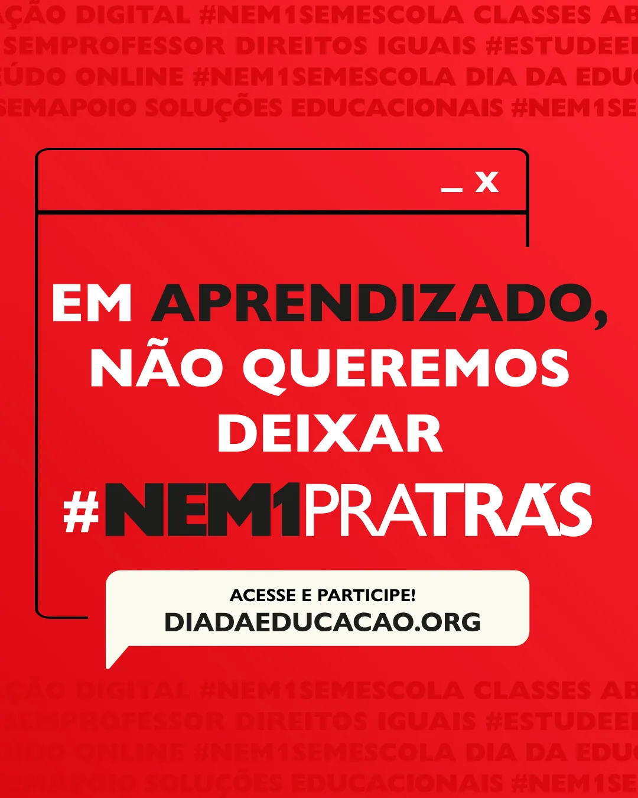
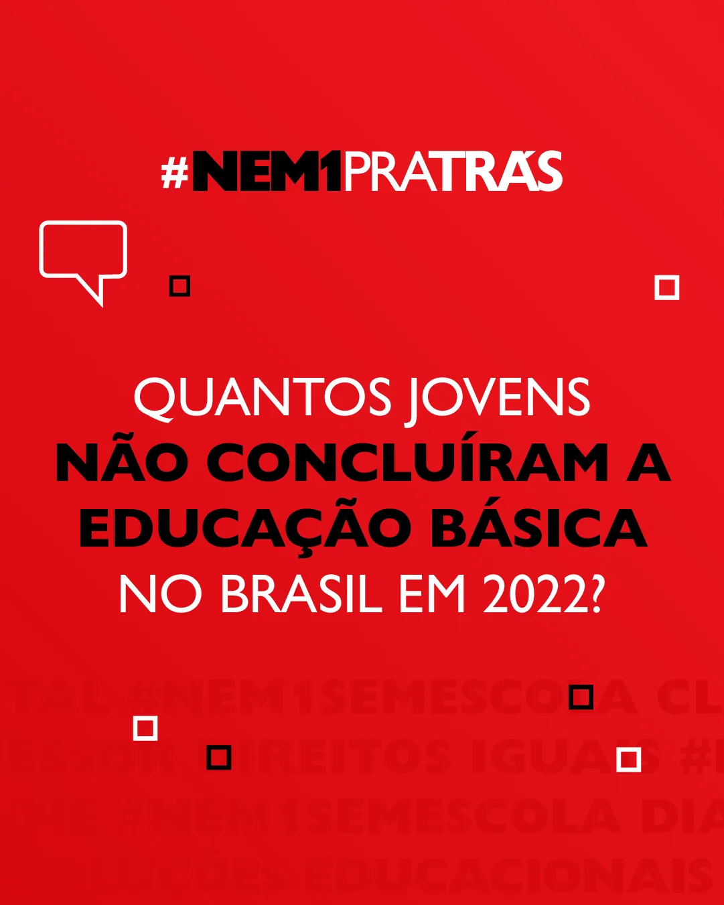
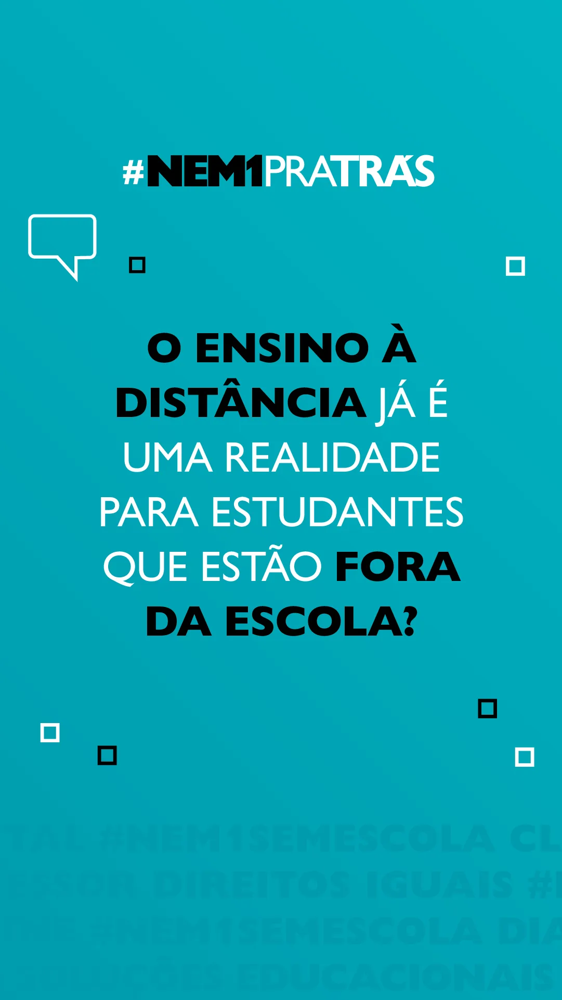
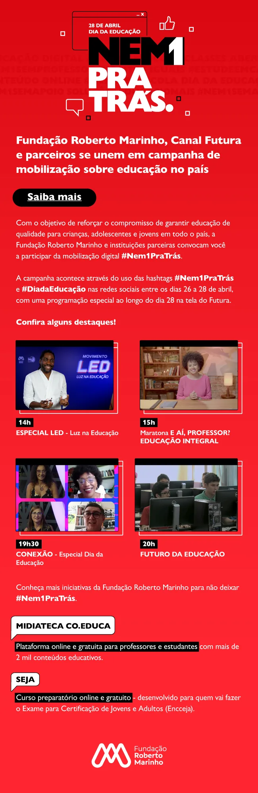

Campanha institucional · 2024
Nem 1 Pra Trás
Campanha do Dia da Educação com um sistema que fala com estudantes, professores e organizações parceiras nos mesmos formatos.
- Cliente
- Fundação Roberto Marinho
- Ano
- 2024
- Área
- Campanha institucional
- Tipo
- Profissional
Contexto
Campanha do Dia da Educação, em 28 de abril, com a hashtag #Nem1PraTrás e o site diadaeducacao.org como ponto de chegada. A campanha precisava falar com três públicos ao mesmo tempo: estudantes, professores e organizações parceiras.
Conceito
A campanha usa a moldura de uma janela de navegador ou de um balão de chat como elemento recorrente. O conteúdo aparece dentro dessa moldura, sobre um fundo que repete as hashtags da mobilização em tipografia de baixo contraste.
Sistema visual
- Paleta de cinco cores chapadas: vermelho, amarelo, roxo, ciano e preto.
- Lettering “NEM1 PRA TRÁS” com contraste forte de peso entre as duas partes.
- Moldura de janela com os três controles no canto, usada como suporte de conteúdo.
- Cards de dado com o número em destaque, a frase em corpo médio e a fonte da pesquisa no rodapé.
- Cada peça existe em feed quadrado e em stories vertical.




Aplicações
Cards de dados numerados, quiz, carrossel, peças institucionais, mailing, thumbnails de vídeo, caça-palavras impresso e kit de peças personalizáveis para organizações parceiras.